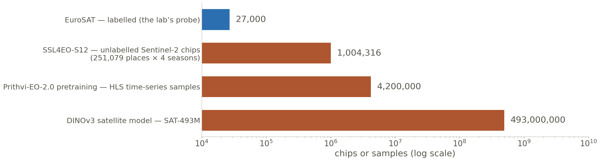
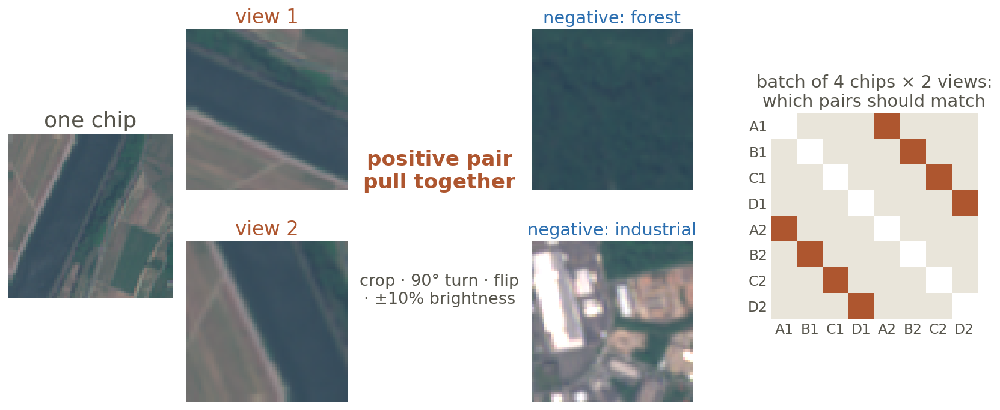
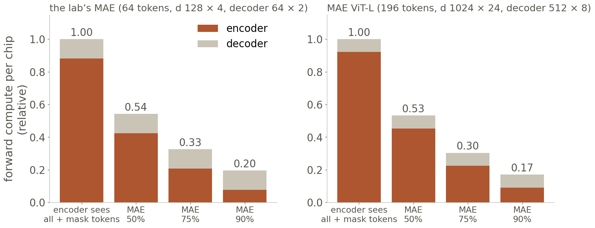
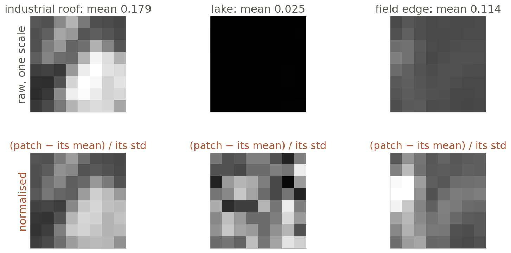
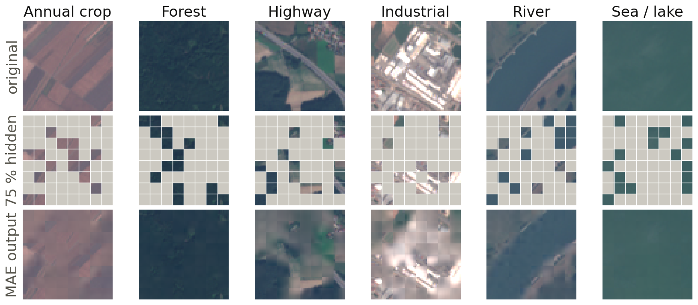
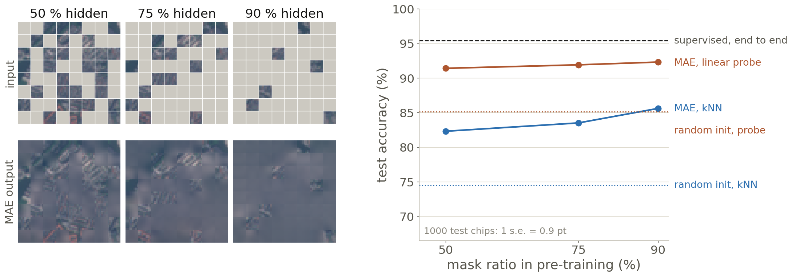
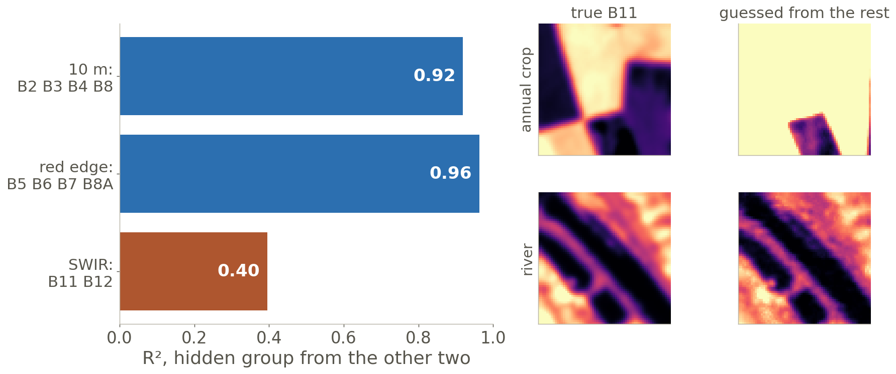

Self-Supervised Learning: Pretrain Your First Model
Half of these chips have three quarters of their patches hidden. A network that learns to fill them back in, with no labels at all, learns what fields, rivers and towns look like. That is how Prithvi, SatMAE and most Earth foundation models (one network pretrained broadly, then adapted to many tasks) were trained, and today you pretrain one yourself.
Deep Learning Applications in Environmental Big Data · Prof. Hyunglok Kim · GISTImage: the same forty EuroSAT-MS (multispectral) chips as Week 6, true colour (bands 4-3-2); on every other chip 48 of the 64 patches (75%) are greyed out, the masked autoencoder's default. Helber et al. 2019, MIT licence.
0:00 · Reading + video quiz
Quiz first — 5 minutes, closed book
3 questions on the video assigned in Week 6 — Attention in transformers, step-by-step (3Blue1Brown, Deep Learning Chapter 6, 26 min).
2 questions on this week’s paper — He et al. 2021, Masked Autoencoders Are Scalable Vision Learners.
No AI, no notes. Swap with your neighbour to grade. Pass = 3 of 5 — the video alone can carry you; the paper alone cannot.
Best 8 of 10 count, 0.75% each; an optional handwritten book summary forgives one wrong answer.
Next Monday, 2 November, is proposal day (Week 8): no quiz, no journal club. The proposal PDF is due Sunday 1 November, 13:00; Note 07 and the video summary are due the same Sunday, 23:59.
Week 7 · 50 min
Today in five blocks — and one chain of cause and effect
1 · Families
self-supervised learning (SSL) the labels are made from the data itself · pretext task the made-up job, e.g. fill in hidden patches · contrastive pull two views (random crops, turns) of one image together, push other images away · self-distillation a student copies a slowly updated teacher · latent prediction predict the hidden part’s embedding (the encoder’s output vector), not its pixels · collapse every input gets the same vector
2 · MAE
masked autoencoder (MAE) hide most patches, rebuild them (this week’s paper) · encoder the part you keep · decoder the part you throw away · mask token one learned vector standing in for every hidden patch
3 · Earth masks
spectral masking hide a whole group of bands · temporal masking hide a whole date · modality one kind of sensor, e.g. radar or elevation
4–5 · Judge, fit
frozen weights not updated · linear probe one linear layer trained on frozen features · kNN k-nearest neighbours: a vote of the k closest training chips · (full) fine-tune train every weight · bf16 / fp16 16-bit numbers that roughly halve activation memory
Report · due Mon 2 Nov — collapse (slide 8): why it happens, how each family blocks it · ≤ 10 pages or a 10-min talk
Click a video to play it large · journal club after the break · every derivation and reference card is in the Appendix
Part 1 · 14 min · the map
Self-Supervised Learning: Four Families and One Failure
What you will see One recipe — hide part of the data, predict it — and the four things a network can be asked to predict: the pixels, the other view, a teacher’s answer, or the hidden part’s embedding. Then the one failure every agreement-based method must block. By the end: place any Earth foundation model on the family tree.
Why it matters here Labelled Earth data is tiny and lopsided; unlabelled imagery arrives every day for free. The Earth foundation models you will fine-tune this semester were pretrained mostly without hand-made labels (some add existing maps as targets).
Where it is used Prithvi, SatMAE, Scale-MAE (masked pixels) · SeCo (Seasonal Contrast), DINOv3 for satellites (views and teachers) · SSL4EO-S12 (an open pretraining set) · Galileo, AnySat, OlmoEarth (latent prediction) · your lab today.
Part 1 · Why bother
Labels are scarce, pixels are free
A label costs a person’s time; an archived chip costs only storage and compute — so learn from chips first, then spend labels.

Each orange bar was used without hand-made labels (the bars show scale, not free downloads); the blue bar is what a typical labelled Earth dataset looks like. And Sentinel-2 alone was already publishing more than 4 TB of new products a day in 2018.
The semester’s plan: pretrain on the orange, adapt with the blue (Weeks 9–10, the capstone).
EO — Earth observation. HLS — Harmonized Landsat Sentinel-2: one 30 m product from both missions. sample — one chip, or one short time series of chips.
Helber et al. 2019 (EuroSAT) · Wang et al. 2022 (SSL4EO-S12, one Sentinel-2 product) · Szwarcman et al. 2024 (Prithvi-EO-2.0) · Siméoni et al. 2025 (DINOv3, §8.1) · European Space Agency (ESA) Sentinel Online, 2018
Part 1 · The recipe
Hide part, predict it — one recipe, four targets
No one labels the training chips: the data supplies question and answer. Families differ mainly in what is predicted.
The targets climb from raw to abstract: pixels → which-image → teacher’s answer → embedding. The higher the target, the less the network wastes on noise — and the easier it is to cheat.
names — MoCo: momentum contrast · SimCLR: simple contrastive learning · BYOL: bootstrap your own latent · DINO: self-distillation, no labels · I-JEPA: image joint-embedding predictive architecture. view — the same chip after a random crop, turn or flip.
He et al. 2021 (MAE) · Chen et al. 2020 (SimCLR) · Caron et al. 2021 (DINO) · Assran et al. 2023 (I-JEPA) · Earth models: Appendix A6
Part 1 · Contrastive · SimCLR
Two views of one chip should match; every other chip should not
The augmentations decide what the model learns to ignore — on satellites, choose them with physics in mind.

The loss is a softmax over the batch: find your partner among 2N − 1 candidates. With N chips (2N views) per batch; SimCLR used 4,096 images and temperature 0.1.
For land cover, a 90° turn is a safe view; colour jitter rewrites the spectrum the bands measure.
negative — any other chip in the batch, assumed to show something different (a second river chip breaks that assumption). SimCLR — a simple framework for contrastive learning.
Chen et al. 2020, SimCLR, ICML · views drawn for this lecture from EuroSAT-MS River_1 · the loss written out: Appendix A2
Part 1 · The one failure
Collapse: map every chip to the same vector and “agree” is satisfied
A loss that only asks two views to agree has a lazy answer — output a constant. Each family blocks it differently.
Watch for it in your own runs: if the loss falls to near zero in a few hundred steps and every embedding is nearly the same vector (cosine ≈ 1 between any two chips), it has collapsed. Cheaper check: the spread of each embedding dimension across a batch must stay well above zero (VICReg, variance–invariance–covariance regularisation, makes this a loss term).
stop-gradient — no backpropagation into the teacher; DINO and BYOL update it separately, by averaging. centring / sharpening — subtract a running mean from the teacher’s output, then make it peakier, so no single answer wins.
Chen et al. 2020 (SimCLR) · Grill et al. 2020 (BYOL) · Caron et al. 2021 (DINO, §3.1) · He et al. 2021 (MAE) · Assran et al. 2023 (I-JEPA) · Appendix A3
Part 1 · Self-distillation · DINO (self-distillation with no labels)
A student copies a teacher that is only a slow average of the student
No negatives, no labels: small crops must give the teacher’s answer for the two large crops. DINOv3 runs on satellites.
Intuition: a small crop of a river must match the answer for the large crop, so features must capture “river-ness” from part of it. Some attention heads outline objects without ever seeing a mask.
DINOv3 (Meta, 2025) has a satellite twin pretrained on 493 million 0.6 m Maxar images, tested on canopy height.
exponential moving average (EMA) — teacher ← λ·teacher + (1 − λ)·student after each step, λ rising from 0.996 to 1. temperature — divides the scores before the softmax; low = peaky.
Caron et al. 2021, DINO, ICCV, §3.1 · Siméoni et al. 2025, DINOv3 (Meta) · BYOL’s version of the same idea: Grill et al. 2020 · Appendix A3
Part 1 · Latent prediction · I-JEPA and its Earth heirs
Predict what the hidden block means, not what it looks like
Pixels carry haze and noise; an embedding target need not reproduce every pixel. Galileo and OlmoEarth do this.
AnySat · 2024
JEPA with patches that adapt to resolution: one model for 11 sensors from 0.2 to 250 m · 125 M parameters
Galileo · 2025
optical, radar, elevation, weather: big masks → deep latent targets, small masks → shallow ones · 0.8–85 M
OlmoEarth · 2025
Ai2’s (Allen Institute for AI) Latent MIM (masked image modelling) Lite: the target, a frozen random projection, never moves · 1.4–300 M
I-JEPA — image joint-embedding predictive architecture. target encoder — a moving-average copy of the context encoder; it supplies the answers, gets no gradient.
Today’s Earth models descend from three lines of influence
Find a model’s line and you know its pretext task, its collapse guard, and how it should be evaluated.
Most Earth models here (orange) are masked reconstruction. The newest mix the lines: Galileo and OlmoEarth keep MAE’s masking but predict in latent space.
foundation model — one network pretrained on broad data, then adapted to many tasks. dates — first public preprint. BERT — a text model; WxC — weather and climate.
Model cards and dates: Appendix A4 (general) and A6 (Earth) · grey: general vision · orange: Earth observation and weather
Part 1 · Watch at home
The four families animated, from a primer to the JEPA argument
For the journal club. Kaiming He is the first author of both MoCo and this week’s MAE paper; his MIT lecture covers both lines of his work, from contrastive views to masking.
MoCo — momentum contrast: keeps a queue of past embeddings as negatives, so it needs no giant batch.
Optional · the MIT lecture opens on YouTube (embedding disabled) · more on the shelf: Appendix A10
Part 2 · 17 min · this week’s paper
The Masked Autoencoder: Hide 75%, Rebuild It, Keep the Encoder
What you will see One chip through MAE with every shape written out; why 75% works for images when BERT masks 15% of words; why the decoder is small and thrown away; reconstructions and a mask-ratio sweep we ran on EuroSAT for this lecture. By the end: write MAE’s masking in five lines and predict what your lab run will show.
Why it matters here MAE is simple, cheap (the encoder sees a quarter of the patches) and needs no augmentations a satellite image would object to. That is a large part of why most Earth models chose it.
Where it is used SatMAE, Scale-MAE, Prithvi-EO-2.0, SpectralGPT, Clay · Prithvi-WxC for weather · your lab: the Week 6 Vision Transformer (ViT) becomes the encoder.
Part 2 · MAE in one picture
Throw away 48 of 64 patches; encode the 16; let a small decoder paint the rest
The encoder never sees a hidden patch or a placeholder — that is what makes MAE cheap. Your lab builds exactly this.
Two choices make it work: a high mask ratio (the task cannot be solved by copying a neighbour) and an asymmetric design (the expensive encoder runs on a quarter of the tokens). Next three slides.
mask token — one learned vector, the same for every gap; only its added position tells the gaps apart. asymmetric — encoder and decoder differ in size and in what they see.
He et al. 2021, MAE, CVPR 2022, §3 and Fig. 1 · the lab’s sizes (8-px patches, 64 tokens) · the shapes in numbers: next slide
Part 2 · One chip through MAE, in numbers
Every shape, from a 13-band chip to one number of loss
These are the shapes of the model we pretrained for this lecture — the size your lab builds from its Week 6 ViT.
step
operation
shape out
what to notice
1
patchify the chip (13, 64, 64)
64 × 832
8 × 8 px × 13 bands per patch, as in Week 6
2
linear 832 → 128, + position of every patch
64 × 128
positions are added before dropping, so the encoder knows where its 16 sit
3
64 random numbers → sort → keep the first 16
16 × 128
a new random mask for every chip, every step; remember the order to undo it
4
encoder: 4 Transformer blocks
16 × 128
16² = 256 scores per head instead of 64² = 4,096: 16× less attention (+1 [CLS] if your ViT has one)
5
linear 128 → 64; add 48 copies of the mask token; un-shuffle; + positions
64 × 64
the decoder is narrower (64) than the encoder (128)
6
decoder: 2 blocks, then linear 64 → 832
64 × 832
one guess for every pixel of every patch
7
squared error vs the normalised true patch, averaged over the 48 hidden
1 number
the 16 visible patches add nothing to the loss
Our model: encoder 0.90 M parameters, decoder 0.16 M; 1,367 epochs over 4,000 EuroSAT chips took 8 minutes on an Apple M2 Ultra.
un-shuffle — put each token back at its original patch index (the official code keeps ids_restore for this). normalised patch — the patch minus its own mean, divided by its own spread (slide 19).
He et al. 2021, §3 · official code: github.com/facebookresearch/mae · the five-line masking function: Appendix A1
Part 2 · Why 75% · measured on EuroSAT
A dumb fill-in already rebuilds most of a chip — so the mask must be high
Neighbouring patches repeat each other; words carry denser meaning. BERT (a text model) hides 15%, MAE 75%.
No learning, yet at 75% the fill beats the mean (0.73 vs 1.0); it fails only near 90%. At 75% a model helps: the tiny MAE gets 0.40.
fill — visible pixels averaged with weights 1 / distance². NMSE — normalised mean squared error: hidden-pixel error ÷ the chip’s variance; ≈ 1 ≈ painting the mean.
Computed for this lecture on 1,000 EuroSAT-MS test chips, 8-px patches (tools/week07_figs/redundancy.py) · BERT: Devlin et al. 2018, §3.1 · MAE: He et al. 2021, §1, Fig. 5
Part 2 · Why the decoder is small
Run the big network on a quarter of the patches: three times less compute
The decoder only paints pixels; the meaning must already be in the encoder’s 16 vectors — so it can be narrow.

At 75% both need about a third of the compute (3.1× and 3.3× less) — the paper’s “3× or more”. Mask tokens in the encoder would cost 3.3× and 14 probe points.
Depth matters only for the probe: one decoder block fine-tunes to 84.8%; the probe needs eight (65.5% → 73.5%).
in the figure — forward cost counted per block as 24·N·d² (projections, MLP) + 4·N²·d (attention), computed for this slide; N = tokens a network sees, d = its width.
He et al. 2021, §3, Table 1a–b (decoder), Table 2 (speed) · compute: tools/week07_deck/figs/fig_compute.py
Part 2 · The target
Predict each patch’s pattern, not its brightness
Errors on bright, high-contrast patches dominate a raw-pixel loss; normalising each patch lets every pattern count. Watch the lake.

The MAE target is each hidden patch minus its own mean, over its own standard deviation. In the paper it beats raw pixels: 85.4% vs 84.9% fine-tuned (ViT-L, Table 1c).
On Earth data, a flat lake or desert patch has almost no spread: normalising it magnifies small variations into the “pattern” to predict — keep the ε, or mask such patches out of the loss.
ε — a small number added to the variance before the square root (official code: 10−6), so a flat patch does not divide by zero.
He et al. 2021, §3 “Reconstruction target” and Table 1c · patches from EuroSAT-MS Industrial_2, SeaLake_1, AnnualCrop_1, band B04
Part 2 · What your lab will produce · measured
Sixteen patches in, a whole chip out — after 8 minutes of pretraining
Blurry but in the right places — a sanity check that the encoder kept the layout; the probe (Part 4) measures the rest.

Six chips the model never saw. Field edges, the river bank and the highway come back in place; roofs come back as blur — exactly what a squared-error loss rewards: the average of the plausible answers.
pasted back — as in the paper’s figures, the 16 visible patches are shown as they were; only the 48 hidden ones are the model’s guess.
Tiny MAE (encoder 0.9 M, decoder 0.16 M), 4,000 EuroSAT-MS chips, 8 min on an Apple M2 Ultra · shown: a twin trained on plain pixels, since normalised outputs cannot be coloured without each hidden patch’s true mean · tools/week07_figs
Part 2 · The mask-ratio sweep · measured
Our sweep: 50, 75 or 90% hidden — all far above an untrained encoder
On EuroSAT the three ratios tie within noise, but each beats random weights by 6–11 points. Your homework repeats this.

Probe 91.4 / 91.9 / 92.3% vs 85.1% untrained; kNN 82.3 / 83.5 / 85.6% vs 74.5%. One seed each, ±0.9 points: do not read “90% is best” into this. The paper also found fine-tuning flat from 40 to 80%.
linear probe / kNN — accuracy of one linear layer, or of a 20-neighbour vote, on the frozen encoder (Part 4).
Computed for this lecture: one seed per ratio, 4,000 train / 1,000 test chips, 1 s.e. ≈ 0.9 points · the 50% and 90% pictures reuse the 75% model, as the paper’s Fig. 4 does · tools/week07_figs/out/mae_results.json
Part 2 · What changes for Earth data
Four things a photo-trained MAE never had to think about
The recipe transfers; the defaults do not. Each row is a choice your lab code makes, on purpose or by accident.
Clouds and no-data A cloud cannot be predicted from the ground around it, and teaches nothing about the ground. Pretrain on cloud-screened chips, or leave cloudy and no-data pixels out of the loss.
Redundancy differs by landscape Our fill test at 75% hidden: annual crop (0.59) and rivers (0.64) are easy, residential (0.88) and industrial (0.80) hard. A ratio tuned on fields can be too high for towns.
13 bands at three resolutions Normalise per band with training-split statistics; the 20 m and 60 m bands are blurrier, so their patches are easier to fill. Hiding whole band groups (Part 3) makes the task about spectra, not texture.
The same place, again and again Sentinel-2 revisits every 5 days. A random split puts the same field in pretraining and in the probe’s test set — split by location, as in Week 2, or the probe flatters you.
no-data — pixels outside the swath or flagged bad, often stored as 0. revisit — the time between two images of the same spot.
Sentinel-2 revisit: 5 days with two satellites at the equator (ESA) · SatMAE: Appendix A6 · Scale-MAE’s scale encoding: Week 6 · leakage-safe splits: Week 2
Part 2 · This week’s paper · 1.5 min
The paper in one slide — BERT’s idea, made to work for images
Four ablations carry the argument; each one is a design choice you copy in the lab.
choice
what they tried
result (ViT-L = Large, fine-tune / linear probe, %)
mask ratio
10% … 90%
75% best for both; the probe swings by up to 20 points (54.6 → 73.5), fine-tune works from 40 to 80%
mask token
in the encoder vs only in the decoder
encoder: 84.2 / 59.6 at 3.3× the compute; decoder only: 84.9 / 73.5
normalised pixels best: 85.4 / 73.9 — no tokenizer needed
augmentation
none, crop, crop + colour jitter
crop only is best (84.9 / 73.5); colour jitter hurts (84.3 / 71.9)
Headline: ViT-H (Huge) reaches 87.8% on ImageNet (448-px fine-tune) using ImageNet alone; pretraining is 3× or more faster than encoding every patch. The probe gap is honest in the paper: MAE ViT-L probes at 75.8% vs MoCo v3’s 77.6%.
ablation — change one design choice, keep everything else, measure. MoCo v3 — a contrastive ViT method, the main baseline.
He et al. 2021, CVPR 2022 · Fig. 5 (ratio), Table 1b–d, Table 3, Table 12 (App. B) · card: Appendix A5 · quizzed today
Part 2 · Watch at home
MAE in thirteen minutes, in detail, from scratch, and the BERT idea it borrowed
Bridge to Part 3. MAE hides random patches. A satellite chip has two more axes to hide along — bands and dates — and the choice of axis decides what the model must learn.
BEiT — BERT pre-training of image Transformers: predicts a discrete code for each hidden patch instead of its pixels; MAE showed plain pixels work as well.
Optional, not assigned · the from-scratch video is long
Part 3 · 7 min · structured masking
Masks for the Earth: Hide a Band, a Date, a Sensor
What you will see Four ways to mask a satellite data cube; a measurement of which band groups can be guessed from the others; how SatMAE, SpectralGPT, Galileo and OlmoEarth chose; and the weather model that hides the future. By the end: pick a mask for your capstone data and say what it forces the model to learn.
Why it matters here What you hide is what the model must learn to infer. Hide random patches and it learns texture; hide a band group and it learns spectra; hide a date and it learns seasons.
Where it is used SatMAE (band groups, dates) · SpectralGPT (3-D spectral tokens) · Galileo, OlmoEarth (sensors) · Prithvi-WxC (masked past → future weather; Week 11).
Part 3 · Four masks
Hide patches, a band group, a date, or big blocks
A satellite chip is a cube — space × bands × time — so the mask can cut along any axis. Each cut teaches something else.
Random → texture and layout (MAE) · spectral → how bands relate (SatMAE hides each band group independently) · temporal → seasons (SatMAE hides each date independently) · block → whole objects, not neighbours’ pixels (I-JEPA, Galileo’s structured masks). A fifth axis, the sensor, hides radar or elevation entirely (Galileo, OlmoEarth).
illustrative — whole-group and whole-date panels extend SatMAE’s idea; SatMAE itself hides 75% of tokens within each group or date. block mask — a few large rectangles.
Drawn for this lecture on EuroSAT-MS forest chips (tools/week07_figs) · Cong et al. 2022 · Assran et al. 2023 · Tseng et al. 2025
Part 3 · Hide a band group · measured
In our test, red-edge bands are easy to guess from the rest; shortwave infrared is not
A group that is easy to guess makes a weak pretext task; SWIR, which tracks moisture, is the harder one to predict.

A straight line recovers red-edge (R² 0.96) but only 0.40 of SWIR on 10 test chips — the crop chip misses whole fields. A pilot, not a verdict: test masks downstream. SatMAE hides 75% of tokens independently in each band group, so the model must “peek” across groups; SpectralGPT hides 90% of 3-D spatial–spectral tokens.
R² — share of the hidden values’ variance the guess explains; 1 = perfect, 0 = no better than the average. SWIR — shortwave infrared (B11, B12), sensitive to water in soil and leaves.
Computed for this lecture: linear regression per pixel, trained on 30 EuroSAT-MS chips, tested on 10 (tools/week07_deck/figs/fig_spectral.py) · groups as in SatMAE (Cong et al. 2022)
Part 3 · Who hides what
Five Earth models, five masks — read the mask as the curriculum
Each model’s mask was chosen for its data: band groups for Sentinel-2, space–time cubes for time series, sensors for multimodal.
model
token
what is hidden
what it must learn
SatMAE · 2022
patch × band group (Sentinel) or patch × date (RGB)
75%, independently per group or per date
to read a region from another band group or date
Prithvi-EO · 2023–24
1 × 16 × 16 cube (time × space), 3–4 dates
75% of cubes (model config)
space and season together
SpectralGPT · 2023
3-D: space × consecutive bands
90%
the spectrum’s shape, band to band
Galileo · 2025
space × time × channel group, 9 modalities
large space–time blocks, and small random spans
big masks → coarse meaning; small → local detail
OlmoEarth · 2025
per sensor and map layer, monthly
tokens of Sentinel-1/2, Landsat and map layers; the target is a frozen random projection
one representation shared by every sensor
SatMAE tested both: hiding the same region in every group (“consistent”) vs independently — independent won, because the model learns to peek at a visible group to rebuild a hidden one.
modality — one kind of measurement: optical, radar, elevation, weather, a land-cover map. cube — a 3-D token (time × height × width); Prithvi’s is 1 × 16 × 16, one date deep.
Cong et al. 2022 (§4.1.2, Table 5) · Prithvi Hugging Face configs (mask_ratio 0.75) · Hong et al. 2024 · Tseng et al. 2025 (§2.1) · Ai2 OlmoEarth 2025 · Appendix A6
Part 3 · Weather · Prithvi-WxC
Hide half of today’s atmosphere and ask for tomorrow’s
One objective covers both: with lead time 0 it is masked reconstruction, with 6–24 h it is a forecast. Week 11 builds on it.
Why 50%, not 75%? One reading: a 0.5° × 0.625° weather field repeats itself less than a field of crops, and the same model must also forecast — the paper does not argue it; it is the journal club’s Q1. For the forecast fine-tune the mask is switched off (0%).
MERRA-2 — Modern-Era Retrospective analysis for Research and Applications 2, NASA’s reanalysis (like ECMWF’s ERA5): past observations blended into a model: 20 surface variables + 10 variables on 14 levels, plus static fields. lead time — how far ahead the prediction is.
Schmude et al. 2024, Prithvi WxC, §2.1 (Eq. 1), §2.4 (50% masking, local/global alternation, 64 A100s) · rollout and forecasting at scale: Week 11
Part 3 · Watch at home · the Earth models, by their builders
Prithvi-EO-2.0, Prithvi-WxC and OlmoEarth, from the teams that pretrained them
Clay — an open Earth model trained mainly as an MAE on several satellites. ECMWF — European Centre for Medium-Range Weather Forecasts. Φ-lab — the European Space Agency’s AI lab.
Optional · all four play here · SSL4EO-S12 (Zhu’s group) is the dataset option for today’s lab
Part 4 · 7 min · judging a pretrained encoder
Evaluation: Probe, Neighbours, Fine-Tune — and Why They Disagree
What you will see Three ways to read a frozen encoder, our own EuroSAT numbers for each, MAE’s famous gap between probe and fine-tune, and what the GEO-Bench-2 benchmark found about ranking Earth foundation models. By the end: fill the lab’s probe table and say what it can and cannot prove.
Why it matters here Every Earth foundation model paper claims to be best. Which number it reports — probe, kNN or fine-tune, on which split — can change the ranking.
Where it is used Note 07’s probe table · the Week 9 scaling sweep · the Week 10 leaderboard · every model card you will read for the capstone.
Part 4 · Three readouts
Freeze it and fit one line, let neighbours vote, or train everything
Each protocol asks a different question of the same encoder — so each can crown a different winner.
A probe measures what is linearly readable; MAE’s features are rich but not laid out for a straight cut, so they look worse until a few layers are trained. MAE ViT-L: 75.8% by probe (MoCo v3: 77.6%); on the 800-epoch model, tuning only the last block lifts it from 73.5% to 81.0%.
kNN — k-nearest neighbours: label a test chip by a vote of the 20 training chips whose embeddings are most similar (cosine). head — the small layer on top that outputs the classes.
Protocols as in He et al. 2021 (§4, Fig. 9) and Caron et al. 2021 (kNN, k = 20) · the lab runs the probe and kNN
Part 4 · Our numbers · measured
On EuroSAT, pretraining lifts every readout — and supervised still wins
4,000 labelled chips is plenty for a 10-class, 64-px task. With fewer labels the order can flip — that is the lab’s question.
encoder (same ViT, 0.9 M)
linear probe
kNN, k = 20
fine-tune, 50 epochs
no network: the 13 band means
76.4
69.0
—
random weights, never trained
85.1
74.5
93.0
MAE, 75%, normalised pixels
91.9
83.5
94.3
MAE, 75%, raw pixels
89.6
84.0
—
supervised, same 8 minutes, with labels
95.2
95.5
95.4 (end to end)
MAE’s probe and kNN differ by 8 points; the supervised model’s by none. MAE features are good but not laid out for neighbours — the paper’s probe-vs-fine-tune story, in miniature.
fine-tune, 50 epochs — all weights trained for 18 s from the MAE weights or from random weights. % accuracy on 1,000 held-out test chips; 1 s.e. ≈ 0.9 points.
Computed for this lecture: 5,000 EuroSAT-MS chips (500 per class), 80/20 split per class, one seed per run, Apple M2 Ultra · tools/week07_figs/out/mae_results.json
Part 4 · The evidence for Earth models · GEO-Bench-2
No model wins everything, and freezing the encoder reshuffles the ranking
A 2025 benchmark of Earth foundation models on 19 datasets: report fine-tuning, and rank by capability, not by one leaderboard.
1 · No single winner Photo-pretrained models (ConvNeXt, a modern convolutional network; DINOv3) lead on high-resolution tasks; Earth models (TerraMind, Prithvi, Clay) on multispectral ones.
2 · Frozen ≠ fine-tuned With the encoder frozen under the same decoder, the models lose accuracy and the ranking changes — so the authors recommend fine-tuning as the protocol. A linear decoder lowers all scores but reorders them less than the other ablations.
3 · Size is not fit “Even the 7B RGB-only (red, green, blue) [DINOv3] model could not surpass the 10× smaller Prithvi-EO-2.0 in crop classification.” Our reading: for crops, the right bands and dates mattered more than parameters.
Reading rule for any results table: which protocol, which split (random or location-held-out), which baseline. Change one and the winner can change.
capability group — datasets that share a property (resolution, bands, time) and are ranked together. frozen + decoder — the encoder is fixed and only a task head, e.g. a U-Net decoder (Week 4), is trained.
Optional · the last video is a mixed-precision coding example (slide 37)
Part 5 · 4 min · mixed precision, hands-on today
Three lines that roughly halve the activation memory
Week 6 named mixed precision; today you switch it on. Which 16-bit type depends on the GPU you are given.
scaler = torch.amp.GradScaler("cuda") # fp16 only
for x in loader:
with torch.autocast("cuda", dtype=DTYPE):
loss = mae(x.cuda()) # forward in mixed precision
opt.zero_grad()
scaler.scale(loss).backward() # bf16: loss.backward()
scaler.step(opt); scaler.update() # bf16: opt.step()
GPU (graphics processor)
DTYPE
scaler?
Colab T4
float16
yes
L4, A100
bfloat16
no
Mac (MPS, Apple’s GPU backend), CPU
float32
—
fp16 keeps 10 stored fraction bits but a narrow range, so tiny gradients underflow to zero — the scaler multiplies the loss up before backward. bf16 keeps fp32’s range, so it needs no scaler — but a T4 has no bf16 hardware.
autocast — picks the precision per operation: matrix multiplies in 16-bit, sensitive ones (softmax, losses) in 32-bit. underflow — a number too small for the format becomes exactly 0.
Write the pretraining plan down before the agent writes code
Note 07 opens with these five sentences; an agent can write MAE in a minute, but only you can say what counts as success.
Data: which chips pretrain the encoder, and which held-out, location-split chips the probe is tested on.
Mask: the ratio and the structure (random patches, band groups, dates) — and what it should force the model to learn.
Target: raw or per-patch normalised pixels; per-band statistics from the training split only; what happens to clouds and no-data.
Check: the reconstruction grid you will look at, and the collapse sign you will watch for (loss near 0 too fast, identical embeddings).
Claim: the probe table — pretrained vs random init vs supervised from scratch, equal epochs — and the one sentence it will support.
equal epochs — the same passes through the labelled chips for every baseline; that is not equal compute — report pretraining time separately.
Same contract as Week 6’s tests-first rule · the claim sentence is graded for honesty, not for winning
Part 5 · FLEX ~4 min · teach or skip
Board exercise: what does masking save on three real datasets?
Count tokens, keep a quarter, square: the attention bill of the encoder shrinks by the square of the keep ratio.
pretraining data
tokens N
visible at 75%
encoder scores per head
at 90%?
EuroSAT, 64 px, patch 8
64
?
? (vs 4,096)
?
SSL4EO-S12, 264 px, patch 8
?
?
?
?
Prithvi-EO-2.0, 224 px, patch 16, 4 dates
?
?
?
?
Then: the decoder still sees all N tokens — at what N does a 2-block, half-width decoder cost as much as the masked encoder? (Use 24·N·d² + 4·N²·d per block, slide 18.)
scores per head — the N × N table of Week 6; for the encoder, N is the number of visible tokens.
Answers in the speaker notes · the decoder question connects to slide 18
Journal club · 30 min · after break · 0 lecture minutes
He et al. 2021, Masked Autoencoders — discussion questions
Q1 · 75% vs 15% Why can MAE mask 75% while BERT masks 15% — and what ratio would you predict for cloud-free Sentinel-2 vs ERA5 fields (compare Prithvi-WxC’s choice)?
start from slides 17 and 29 and the paper’s Fig. 5
Q2 · the thrown-away decoder What exactly does the decoder learn, and why throw it away?
start from slides 15 and 18 and the paper’s Table 1a–b
Q3 · a mask for the Earth Propose one EO-specific masking structure and the invariance it would induce.
start from slides 26–28 — and from your capstone data
The whole class as one team, working from your published entrance tickets (Journal Club tab) · the drawn leader moderates, the presenter synthesises, the questioner challenges the synthesis · these three questions are the agenda.
Leader opens with one reproduced figure (Fig. 2 or Fig. 5 of the paper) · roles revealed at 13:00 on the course site · optional: DINO, SimCLR
Lab briefing · 3 min · after journal club
Lab: pretrain a mini-MAE on your Week 6 ViT, then probe it honestly
Pretrain. Week 6 mini_vit.py = encoder; + 2-block decoder, 75% masking, normalised-pixel loss. ≈ 1 M parameters, 16-bit, ≈ 15 min on one GPU, on ≈ 5 k SSL4EO-S12 Sentinel-2 L1C chips (13 bands, as EuroSAT; map the band order).
Probe. EuroSAT: probe and kNN on the frozen encoder vs random init and supervised-from-scratch, equal epochs.
Verify, do not trust: look at a reconstruction grid before you trust any number — a blurry but well-placed river is a good sign; flat grey patches mean checking the mask, the target and the display scaling.
def random_masking(x, ratio=0.75): # x: (B, N, d), positions already added
B, N, d = x.shape
keep = int(N * (1 - ratio)) # 64 → 16
noise = torch.rand(B, N, device=x.device) # one random number per patch
ids_shuffle = noise.argsort(dim=1) # small noise = kept
ids_restore = ids_shuffle.argsort(dim=1) # undoes the shuffle later
ids_keep = ids_shuffle[:, :keep]
x_vis = x.gather(1, ids_keep[..., None].expand(-1, -1, d)) # (B, 16, d)
mask = torch.ones(B, N, device=x.device); mask[:, :keep] = 0
mask = mask.gather(1, ids_restore) # 1 = hidden, in original order
return x_vis, mask, ids_restore
def mae_loss(pred, patches, mask, eps=1e-6): # pred, patches: (B, N, 832)
mu = patches.mean(-1, keepdim=True); var = patches.var(-1, keepdim=True)
target = (patches - mu) / (var + eps) ** 0.5 # per-patch normalised pixels
err = ((pred - target) ** 2).mean(-1) # (B, N): one number per patch
return (err * mask).sum() / mask.sum() # hidden patches only
Decoder side.y = dec_embed(enc(x_vis)) → (B, 16, 64); append N − 16 copies of mask_token → (B, 64, 64); y.gather(1, ids_restore…) puts every token back at its patch index; add decoder positions; 2 blocks; Linear(64, 832).
Tests worth writing first (Week 6 habit): the mask hides exactly 48 per chip; ids_restore inverts ids_shuffle; the loss ignores changes to visible patches; with ratio 0 the encoder sees all 64 (test the masking only — the loss needs at least one hidden patch).
Display. For a reconstruction grid, paste the visible patches back and de-normalise predictions — with normalised targets the true patch mean/std is needed, so say which you used.
Follows the official implementation (github.com/facebookresearch/mae, models_mae.py: random_masking, forward_loss with norm_pix_loss)
Appendix A2 · The contrastive loss, written out
InfoNCE (information noise-contrastive estimation): find your other view
A batch of N chips gives 2N views; zi is the projected embedding of view i, and j is the other view of the same chip.
sim = cosine similarity; τ = temperature; the loss is the mean of ℓi over all 2N views.
It is cross-entropy for a classification with 2N − 1 classes whose label is “my other view” — the grid on slide 7.
Each anchor has one positive and 2N − 2 negatives; larger batches helped in SimCLR’s experiments. SimCLR: 4,096 images per batch by default, up to 8,192 (16,382 negatives per pair); τ = 0.1 was best (Table 5).
Small τ makes the softmax peaky: the hardest negatives dominate the gradient.
def info_nce(z1, z2, tau=0.1): # z1, z2: (N, k), two views
z = F.normalize(torch.cat([z1, z2]), dim=1) # (2N, k)
s = z @ z.T / tau # cosine / tau
s.fill_diagonal_(float("-inf")) # never match yourself
N = z1.shape[0] # partner of view i:
target = (torch.arange(2*N, device=z.device) + N) % (2*N)
return F.cross_entropy(s, target)
Chen et al. 2020, SimCLR, §2.1 (NT-Xent: normalised temperature-scaled cross-entropy) · van den Oord et al. 2018 (InfoNCE) · MoCo replaces the big batch with a queue of past embeddings
Appendix A3 · DINO’s loss, and what blocks collapse
x: a global crop seen by the teacher gt; x′: any other crop seen by the student gs; outputs are K-dimensional (K = 65,536 “prototypes”: learned reference vectors, not land-cover classes).
Centring: c ← m·c + (1 − m)·batch mean of the raw teacher scores (before softmax) — stops one prototype from winning for every image.
Sharpening: τt < τs (teacher 0.04 → 0.07, student 0.1) — stops the output from going uniform. Either alone collapses; together they balance.
Teacher update: θt ← λ θt + (1 − λ) θs, λ from 0.996 to 1 on a cosine schedule; no gradient reaches the teacher.
Collapse guards by family: SimCLR — negatives · BYOL — predictor + moving-average target · DINO — centring + sharpening + moving average · MAE — a pixel target · I-JEPA — moving-average target + predictor · VICReg — an explicit variance term.
Caron et al. 2021, DINO, §3.1 and Appendix · Grill et al. 2020, BYOL · Bardes et al. 2022, VICReg · kNN protocol (k = 20, τ = 0.07): DINO Appendix F
Appendix A4 · The family card
Five general methods, side by side
method
predicts
collapse guard
augmentation
headline (ImageNet)
SimCLR 2020
which view is the partner (NT-Xent, τ 0.1)
negatives: batch 4,096–8,192
crop + colour distortion essential
linear 69.3% (ResNet-50), 76.5% (4× wider)
BYOL 2020
a target network’s projection of another view
predictor + moving-average target
SimCLR-style
linear 74.3% (ResNet-50), 79.6% (larger)
DINO 2021
teacher’s distribution over K = 65,536 prototypes
centring + sharpening + moving average
multi-crop: 2 × 224² + several 96²
ViT-B/8: linear 80.1%, kNN 77.4%
MAE 2021
normalised pixels of 75% hidden patches
the pixel target itself
crop only (colour jitter hurts)
ViT-H 87.8% fine-tune; ViT-L probe 75.8%
I-JEPA 2023
target-encoder embeddings of 4 blocks (15–20% each)
moving-average target + predictor
none hand-crafted
ViT-H/14 on 16 A100s in < 72 h
Later scale-ups: DINOv2 (2023, LVD-142M (Meta’s curated 142 M images), 1.1 B-parameter ViT-g, DINO + iBOT (masked-token self-distillation) losses) · DINOv3 (2025, 7 B teacher, LVD-1689M, Gram anchoring, which keeps patch features from drifting; satellite model on SAT-493M, 0.6 m Maxar RGB).
Chen et al. 2020 (Tables 5–6) · Grill et al. 2020 · Caron et al. 2021 (Table 2, §3.2) · He et al. 2021 (Tables 3, 12) · Assran et al. 2023 · Oquab et al. 2023 · Siméoni et al. 2025
Appendix A5 · This week’s paper
Masked Autoencoders Are Scalable Vision Learners — the card
He, Chen, Xie, Li, Dollár, Girshick · Meta AI · arXiv 2111.06377 · CVPR 2022.
Design (MSE = mean squared error; FLOPs = floating-point operations): random uniform masking, 75%; encoder = ViT on visible patches only, no mask tokens; decoder 8 blocks × 512 (9% of ViT-L’s FLOPs per token); shared learned mask token + positions added before the decoder; MSE on masked patches only (loss on all pixels: about −0.5 percentage points).
Target: per-patch normalised pixels (85.4 / 73.9 vs 84.9 / 73.5 raw; ft / lin, ViT-L, 800 epochs).
Speed: 3.3× fewer training FLOPs, 2.8× faster wall clock (3.5–4.1× with a smaller decoder or ViT-H). ViT-L, 1,600 epochs: 31 h on 128 Google TPU-v3 cores (MoCo v3, 300 epochs: 36 h).
Schedule: the linear probe has not saturated at 1,600 epochs.
ViT, ImageNet-1K only
fine-tune
linear probe
B
83.6
68.0
L
85.9
75.8
H
86.9
76.6
H, 448 px
87.8
—
Partial fine-tuning (ViT-L, the separate 800-epoch model): 0 blocks (probe) 73.5 → half a block (its MLP) 79.1 → 1 block 81.0; 4–6 blocks ≈ full. MoCo v3 probes higher (77.6) but every partial fine-tune is worse (MAE leads by 2.6 points at 4 blocks).
Quote: “linear probing and fine-tuning results are largely uncorrelated … linear separability is not the sole metric for evaluating representation quality.”
Cong 2022 · Jakubik 2023 · Szwarcman 2024 · Hong 2024 · Astruc 2024 · Tseng 2025 · Ai2 2025 (arXiv 2511.13655) · Schmude 2024 · Wang 2022 · Prithvi masking ratios from the official Hugging Face configs
Appendix A7 · Evaluation protocols and GEO-Bench-2
Five readouts, written down exactly
Linear probe — a linear classifier on the frozen representation. MAE’s recipe adds a non-affine batch normalisation before it, no colour jitter or mixup (blending two images), weight decay 0.
kNN (DINO, App. F) — store frozen [CLS] (summary-token) features of the training set; a test chip takes a vote of its k = 20 most similar (cosine), weighted by exp(similarity / 0.07). No fitted classifier; k = 20 and temperature 0.07 fixed.
Partial fine-tune — train the last few blocks (MAE Fig. 9: 0 blocks = probe, 24 = full).
Full fine-tune — train everything with a new head; end-to-end adaptation, the most expensive reading.
Frozen + decoder — GEO-Bench-2’s frozen setting: the encoder fixed, a task decoder (e.g. U-Net) trained.
GEO-Bench-2 (arXiv 2511.15658, Nov 2025): 19 permissively licensed datasets — classification, segmentation, regression, detection, instance segmentation; nine overlapping capability groups (resolution, bands, time…); ranks by normalised bootstrapped interquartile mean.
No model dominates; photo-pretrained models lead high-resolution tasks, Earth models multispectral ones.
Frozen encoders lose accuracy in aggregate and the ranking changes → the authors recommend fine-tuning.
The biggest rank change came from feeding a single date to multi-date tasks.
GEO-Bench (Lacoste et al. 2023): six classification + six segmentation tasks.
He et al. 2021 (App. A.1, §4.3) · Caron et al. 2021 (App. F) · GEO-Bench-2 §2–5, App. 6.3 · Lacoste et al. 2023
Appendix A8 · Lab reference
Data, the autocast switch, and the probe recipe
Pretraining chips: ≈ 5 k SSL4EO-S12 Sentinel-2 L1C chips (13 bands like EuroSAT; reorder to EuroSAT’s band order; 264 px — crop to 64 px, or patch 8 on 264 px = 1,089 tokens). The Week 3 HLS chips have 6 bands: use a declared common-band subset and 384-value patches throughout. Per-band mean/std from the pretraining chips only.
Probe data: EuroSAT-MS, 27,000 chips, 64 px, 13 bands, 10 classes; band order in the file: B01…B12, then B8A (Week 6 A9).
Model: your Week 6 ViT (d 128, 4 heads, 4–6 blocks) as encoder; decoder d 64, 2 blocks; mask 75%; normalised-pixel loss.
Probe recipe: frozen encoder → mean of the tokens (or [CLS], the summary token) → logistic regression (a linear classifier); kNN k = 20, cosine; same split for all three encoders.
Which 16-bit type?
cuda = torch.cuda.is_available()
major = torch.cuda.get_device_capability()[0] if cuda else 0
DTYPE = torch.bfloat16 if major >= 8 else torch.float16
# not is_bf16_supported(): by default it may count
# emulation and return True on a T4
PyTorch AMP docs · torch.cuda.is_bf16_supported(including_emulation=True) by default · NVIDIA CUDA GPU list (compute capability) · Wang et al. 2022 (SSL4EO-S12)
Appendix A9 · Watch at home · assigned
This week’s assigned video — Stanford CS231N, self-supervised learning
Assigned. Three of the Week 9 quiz’s five questions (9 November) come from this video. Your 0.5-page summary is due with Note 07, Sunday 1 November, 23:59.
The pretext tasks before contrastive learning, and why they were replaced.
How the lecture explains the contrastive loss, and what limits it (batch size, negatives).
MAE and DINO in the lecture’s words: what is predicted, and what stops collapse.
One sentence connecting the lecture to today’s lab probe table.
Slides for the lecture: cs231n.stanford.edu/slides/2025 · the optional shelf is not quizzed
Appendix A10 · More to watch · teachers and satellites
The video shelf — DINOv2, DINOv3 and a canopy map built on DINOv2